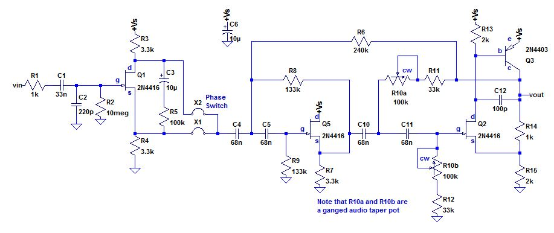

4th order high pass filter based on discrete JFETs
Not much info here. This was my first prototype of the circuit that led to HPF-Pre Series 3. It's built from 4 discrete transistors. Today, the PN4416 JFET is obsolete, and it might not be possible to find one. There's a surface mount MMBF4416 that should work, but is untested. So the circuit is here for interest and amusement only.
